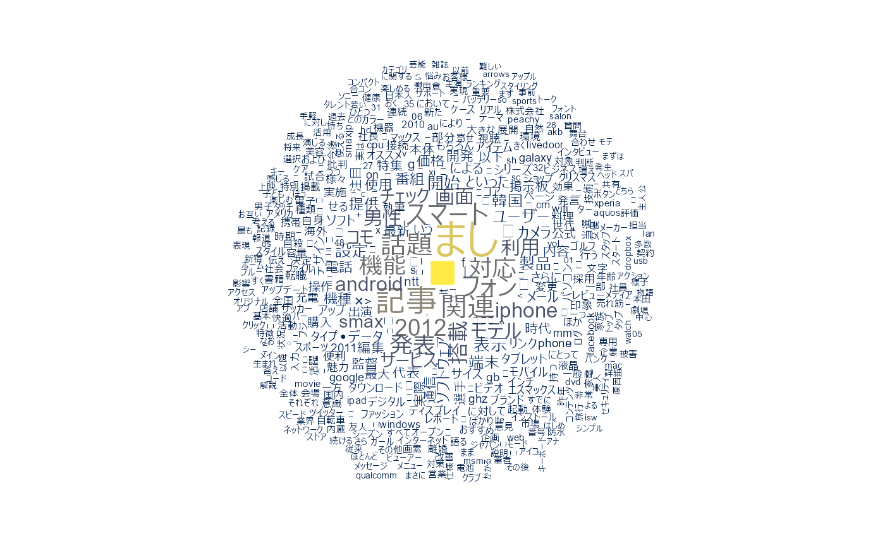
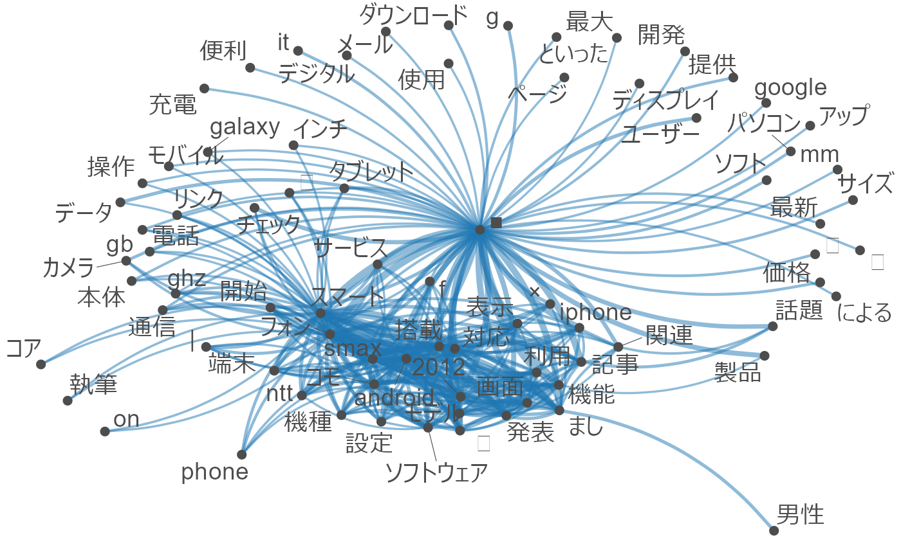
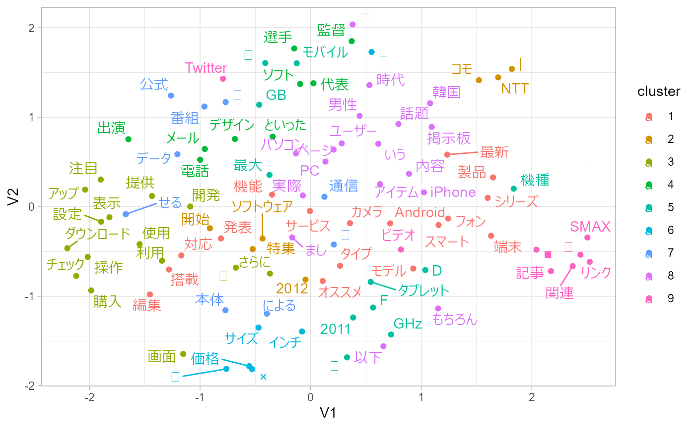

この記事について
{quanteda}と{RcppKagome}を用いたテキストマイニングの例です（{googledrive}を利用して自作の文章を分析していた過去記事についてはQiitaのログ（revision < 10）から参照してください）。
なお、以下のパッケージについては、ここではGitHubからインストールできるものを使っています。
データの準備
テキストデータとしてlivedoorニュースコーパスを使います。以下の9カテゴリです。
- トピックニュース
- Sports Watch
- ITライフハック
- 家電チャンネル
- MOVIE ENTER
- 独女通信
- エスマックス
- livedoor HOMME
- Peachy
{ldccr}でデータフレームにします。
data <- ldccr::parse_ldcc(exdir = "cache")
#> Parsing dokujo-tsushin...
#> Parsing it-life-hack...
#> Parsing kaden-channel...
#> Parsing livedoor-homme...
#> Parsing movie-enter...
#> Parsing peachy...
#> Parsing smax...
#> Parsing sports-watch...
#> Parsing topic-news...
#> Done.このうち一部だけをquantedaのコーパスオブジェクトとして格納し、いろいろ試していきます。
corp <- data %>%
dplyr::sample_frac(size = .1)
corp <- corp %>%
dplyr::pull("body") %>%
stringr::str_remove_all("[[:punct:]]+") %>%
## quanteda::tokensにremove_punctというオプションがあるのでそれを用いてもよい
zipangu::str_jnormalize() %>%
RcppKagome::kagome() %>%
RcppKagome::pack_list() %>%
dplyr::bind_cols(corp) %>%
quanteda::corpus()
#> Warning in .recacheSubclasses(def@className, def, env): undefined subclass
#> "numericVector" of class "Mnumeric"; definition not updatedワードクラウド
ストップワードとしてrtweet::stopwordslangsを利用しています。
stopwords <- rtweet::stopwordslangs %>%
dplyr::filter(lang == "ja") %>%
dplyr::filter(p >= .98) %>%
dplyr::pull(word)
corp %>%
quanteda::tokens(what = "word") %>%
quanteda::tokens_remove(stopwords, valuetype = "fixed") %>%
quanteda::dfm() %>%
quanteda::dfm_group(groups = category) %>%
quanteda::dfm_trim(min_termfreq = 10L) %>%
quanteda.textplots::textplot_wordcloud(color = viridis::cividis(8L))
出現頻度の集計
corp %>%
quanteda::tokens(what = "word") %>%
quanteda::tokens_remove(stopwords, valuetype = "fixed") %>%
quanteda::dfm() %>%
quanteda::dfm_weight("prop") %>%
quanteda.textstats::textstat_frequency(groups = category) %>%
dplyr::top_n(-30L, rank) %>%
ggpubr::ggdotchart(
x = "feature",
y = "frequency",
group = "group",
color = "group",
rotate = TRUE
) +
ggplot2::theme_bw()
#> Warning in .recacheSubclasses(def@className, def, env): undefined subclass
#> "numericVector" of class "Mnumeric"; definition not updated
Keyness
ITライフハック（it-life-hack）グループの文書とその他の対照を見ています。
corp %>%
quanteda::tokens(what = "word") %>%
quanteda::tokens_remove(stopwords, valuetype = "fixed") %>%
quanteda::dfm() %>%
quanteda::dfm_group(groups = category) %>%
quanteda.textstats::textstat_keyness(target = "it-life-hack") %>%
quanteda.textplots::textplot_keyness()対応分析
全部をプロットすると潰れて見えないので一部だけを抽出しています。
corp_sample <- quanteda::corpus_sample(corp, size = 32L)
corp_sample %>%
quanteda::tokens(what = "word") %>%
quanteda::tokens_remove(stopwords, valuetype = "fixed") %>%
quanteda::dfm() %>%
quanteda::dfm_weight(scheme = "prop") %>%
quanteda.textmodels::textmodel_ca() %>%
quanteda.textplots::textplot_scale1d(
margin = "documents",
groups = quanteda::docvars(corp_sample, "category")
)共起ネットワーク
corp %>%
quanteda::tokens(what = "word") %>%
quanteda::tokens_remove(stopwords, valuetype = "fixed") %>%
quanteda::dfm() %>%
quanteda::dfm_group(groups = category) %>%
quanteda::dfm_trim(min_termfreq = 100L) %>%
quanteda::fcm() %>%
quanteda.textplots::textplot_network(min_freq = .96)
クラスタリング
マンハッタン距離、ward法（ward.D2）です。ここでも一部だけを抽出しています。
d <- corp_sample %>%
quanteda::tokens(what = "word") %>%
quanteda::tokens_remove(stopwords, valuetype = "fixed") %>%
quanteda::dfm() %>%
quanteda::dfm_weight(scheme = "prop") %>%
quanteda.textstats::textstat_dist(method = "manhattan") %>%
as.dist() %>%
hclust(method = "ward.D2") %>%
ggdendro::dendro_data(type = "rectangle") %>%
purrr::list_modify(
labels = dplyr::bind_cols(
.$labels,
names = names(corp_sample),
category = quanteda::docvars(corp_sample, "category")
)
)
ggplot2::ggplot(ggdendro::segment(d)) +
ggplot2::geom_segment(aes(x = x, y = y, xend = xend, yend = yend)) +
ggplot2::geom_text(ggdendro::label(d), mapping = aes(x, y, label = names, colour = category, hjust = 0), size = 3) +
ggplot2::coord_flip() +
ggplot2::scale_y_reverse(expand = c(.2, 0)) +
ggdendro::theme_dendro()
LDA（Latent Dirichlet Allocation）
LDAについてはquanteda::convertでdfmを変換してtopicmodels::LDAに直接渡すこともできます。公式のクイックスタートガイドも参考にしてください。weighted LDAなどの実装を含む{keyATM}といった選択肢もあります。
なお、トピック数は9に決め打ちしています。トピック数含めパラメタの探索をしたい場合には、{ldatuning}や{stm}などを利用したほうがよいです。
dtm <- corp %>%
quanteda::tokens(what = "word") %>%
quanteda::tokens_remove(stopwords, valuetype = "fixed") %>%
quanteda::dfm() %>%
quanteda::dfm_tfidf()
features <- corp %>%
quanteda::tokens(what = "word") %>%
quanteda::tokens_remove(stopwords, valuetype = "fixed") %>%
quanteda::dfm() %>%
quanteda::ntoken()
m <- dtm %>%
as("dgCMatrix") %>%
textmineR::FitLdaModel(k = 9, iterations = 200, burnin = 175)
m$phi %>%
textmineR::GetTopTerms(15L) %>%
knitr::kable()| t_1 | t_2 | t_3 | t_4 | t_5 | t_6 | t_7 | t_8 | t_9 |
|---|---|---|---|---|---|---|---|---|
| 選手 | 自転車 | レビュー | 独 | ソフトウェア | iphone | 当選 | 韓国 | 孫 |
| 本田 | ★ | 表示 | 男性 | フォン | 釣 | 転職 | 韓 | ゴルフ |
| サッカー | 監督 | 通 | チーズ | スマート | 温度 | 発送 | 肌 | ドバイ |
| 試合 | 賞 | dropbox | ビスケット | コモ | 浴衣 | 籠谷 | ケア | 東口 |
| 斎藤 | ロボット | 画面 | まし | android | ホルダー | 賞品 | タイヤ | 話題 |
| フジ | 役 | ビューアー | 八重歯 | phone | スタンド | 求人 | キャビア | 社長 |
| アナ | パチンコ | パソコン | 歯 | f | スキー | 厄年 | スキン | 新宿 |
| 番組 | 祭 | it | クリスマス | smax | 水着 | お正月 | 野菜 | 前年 |
| akb | 手当 | 機能 | 合コン | ntt | 帯 | スパイス | 矢野 | hulu |
| 批判 | アクション | 設定 | 主婦 | 機種 | 充電 | ビジネス | 生理 | 小原 |
| 紺 | 篇 | disk | 仮名 | 搭載 | スパ | 悩み | 毛 | 展 |
| 韓国 | ホアキン | データ | 外貨 | 約 | 柄 | 仮面ライダー | クリーム | 視聴 |
| 発言 | 演じる | デジタル | 末永 | ghz | ウェア | ライダー | バラ | 数量 |
| なでしこ | 劇場 | 製品 | 婚 | モデル | 脚 | 社員 | ガル | 台 |
| 五輪 | アメリカ | lan | 料理 | ◯ | ブランド | 企業 | ピラミッド | 韓国 |
LDAvisで可視化してみます。ただ、LDAvisはもうしばらくメンテナンスされていないパッケージで、ちょっと挙動があやしいところがあります。たとえば、デフォルトロケールがCP932であるWindows環境の場合、LDAvis::createJSONで書き出されるラベル（vocab）のエンコーディングがそっちに引きずられてCP932になってしまうため、ブラウザで表示したときにラベルが文字化けします。書き出されたlda.jsonをUTF-8に変換すれば文字化けは解消されるので、とりあえずあとから変換して上書きするとよいです。
LDAvis::createJSON(
phi = m$phi,
theta = m$theta,
doc.length = features,
vocab = stringi::stri_enc_toutf8(dtm@Dimnames$features),
term.frequency = quanteda::colSums(dtm)
) %>%
LDAvis::serVis(open.browser = FALSE, out.dir = file.path(getwd(), "cache/ldavis"))
#> Warning in dir.create(out.dir): 'C:
#> \Users\user\Documents\GitHub\RcppKagome\vignettes\cache\ldavis' はすでに存在しま
#> す
#> 要求されたパッケージ servr をロード中です
readr::read_lines_raw(file.path(getwd(), "cache/ldavis", "lda.json")) %>%
iconv(from = "CP932", to = "UTF-8") %>%
jsonlite::parse_json(simplifyVector = TRUE) %>%
jsonlite::write_json(file.path(getwd(), "cache/ldavis", "lda.json"), dataframe = "columns", auto_unbox = TRUE)GloVe
ここでは50次元の埋め込みを得ます。
toks <- corp %>%
quanteda::tokens(what = "word") %>%
as.list() %>%
text2vec::itoken()
vocab <- toks %>%
text2vec::create_vocabulary() %>%
text2vec::prune_vocabulary(term_count_min = 10L)
vectorize <- text2vec::vocab_vectorizer(vocab)
tcm <- text2vec::create_tcm(
it = toks,
vectorizer = vectorize,
skip_grams_window = 5L
)
glove <- text2vec::GlobalVectors$new(
rank = 50,
x_max = 15L
)
wv <- glove$fit_transform(
x = tcm,
n_iter = 10L
) %>%
as.data.frame(stringsAsFactors = FALSE) %>%
tibble::as_tibble(.name_repair = "minimal", rownames = NA)
#> INFO [00:24:17.635] epoch 1, loss 0.1785
#> INFO [00:24:18.557] epoch 2, loss 0.0996
#> INFO [00:24:19.385] epoch 3, loss 0.0824
#> INFO [00:24:20.230] epoch 4, loss 0.0721
#> INFO [00:24:21.043] epoch 5, loss 0.0651
#> INFO [00:24:21.886] epoch 6, loss 0.0600
#> INFO [00:24:22.730] epoch 7, loss 0.0560
#> INFO [00:24:23.574] epoch 8, loss 0.0528
#> INFO [00:24:24.386] epoch 9, loss 0.0502
#> INFO [00:24:25.230] epoch 10, loss 0.0481{umap}で次元を減らして可視化します。色はstats::kmeansでクラスタリング（コサイン類似度）して付けています。
pull_layout <- function(tbl) {
umap <- umap::umap(as.matrix(tbl))
layout <- umap$layout
rownames(layout) <- rownames(tbl)
return(as.data.frame(layout))
}
vec <- vocab %>%
dplyr::anti_join(
y = tibble::tibble(words = stopwords),
by = c("term" = "words")
) %>%
dplyr::arrange(desc(term_count)) %>%
dplyr::slice_head(n = 100L) %>%
dplyr::left_join(tibble::rownames_to_column(wv), by = c("term" = "rowname")) %>%
tibble::column_to_rownames("term") %>%
dplyr::select(starts_with("V"))
dist <- proxyC::simil(as(as.matrix(vec), "dgCMatrix"), method = "cosine")
clust <- kmeans(x = dist, centers = 9)
vec <- pull_layout(vec) %>%
tibble::rownames_to_column() %>%
dplyr::mutate(cluster = as.factor(clust$cluster))
vec %>%
ggplot2::ggplot(aes(x = V1, y = V2, colour = cluster)) +
ggplot2::geom_point() +
ggrepel::geom_text_repel(aes(label = rowname)) +
ggplot2::theme_light()
セッション情報
sessioninfo::session_info()
#> - Session info ---------------------------------------------------------------
#> setting value
#> version R version 4.0.2 (2020-06-22)
#> os Windows 10 x64
#> system x86_64, mingw32
#> ui RTerm
#> language (EN)
#> collate Japanese_Japan.932
#> ctype Japanese_Japan.932
#> tz Asia/Tokyo
#> date 2021-05-11
#>
#> - Packages -------------------------------------------------------------------
#> ! package * version date lib
#> abind 1.4-5 2016-07-21 [2]
#> askpass 1.1 2019-01-13 [2]
#> assertthat 0.2.1 2019-03-21 [2]
#> async 0.0.0.9004 2021-03-03 [2]
#> backports 1.2.1 2020-12-09 [2]
#> bit 4.0.4 2020-08-04 [2]
#> bit64 4.0.5 2020-08-30 [2]
#> broom 0.7.6 2021-04-05 [2]
#> bslib 0.2.4 2021-01-25 [2]
#> cachem 1.0.4 2021-02-13 [2]
#> callr 3.7.0 2021-04-20 [2]
#> car 3.0-10 2020-09-29 [2]
#> carData 3.0-4 2020-05-22 [2]
#> cellranger 1.1.0 2016-07-27 [2]
#> cli 2.5.0 2021-04-26 [2]
#> coda 0.19-4 2020-09-30 [2]
#> codetools 0.2-18 2020-11-04 [2]
#> colorspace 2.0-1 2021-05-04 [2]
#> crayon 1.4.1 2021-02-08 [2]
#> curl 4.3.1 2021-04-30 [2]
#> data.table 1.14.0 2021-02-21 [2]
#> DBI 1.1.1 2021-01-15 [2]
#> dbplyr 2.1.1 2021-04-06 [2]
#> desc 1.3.0 2021-03-05 [2]
#> digest 0.6.27 2020-10-24 [2]
#> dplyr * 1.0.6 2021-05-05 [2]
#> ellipsis 0.3.2 2021-04-29 [2]
#> evaluate 0.14 2019-05-28 [2]
#> fansi 0.4.2 2021-01-15 [2]
#> farver 2.1.0 2021-02-28 [2]
#> fastmap 1.1.0 2021-01-25 [2]
#> fastmatch 1.1-0 2017-01-28 [2]
#> float 0.2-4 2020-04-22 [2]
#> forcats * 0.5.1 2021-01-27 [2]
#> foreach 1.5.1 2020-10-15 [2]
#> foreign 0.8-81 2020-12-22 [2]
#> fs 1.5.0 2020-07-31 [2]
#> generics 0.1.0 2020-10-31 [2]
#> ggdendro 0.1.22 2020-09-13 [2]
#> ggplot2 * 3.3.3 2020-12-30 [2]
#> ggpubr 0.4.0 2020-06-27 [2]
#> ggrepel 0.9.1 2021-01-15 [2]
#> ggsignif 0.6.1 2021-02-23 [2]
#> glmnet 4.1-1 2021-02-21 [2]
#> glue 1.4.2 2020-08-27 [2]
#> gridExtra 2.3 2017-09-09 [2]
#> gtable 0.3.0 2019-03-25 [2]
#> haven 2.4.1 2021-04-23 [2]
#> highr 0.9 2021-04-16 [2]
#> hms 1.0.0 2021-01-13 [2]
#> htmltools 0.5.1.1 2021-01-22 [2]
#> httpuv 1.6.1 2021-05-07 [2]
#> httr 1.4.2 2020-07-20 [2]
#> iterators 1.0.13 2020-10-15 [2]
#> jquerylib 0.1.4 2021-04-26 [2]
#> jsonlite 1.7.2 2020-12-09 [2]
#> kagomer 0.0.1.900 2021-04-25 [2]
#> knitr 1.33 2021-04-24 [2]
#> labeling 0.4.2 2020-10-20 [2]
#> later 1.2.0 2021-04-23 [2]
#> lattice 0.20-41 2020-04-02 [3]
#> LDAvis 0.3.2 2015-10-24 [2]
#> ldccr 0.0.5 2021-04-23 [2]
#> lgr 0.4.2 2021-01-10 [2]
#> LiblineaR 2.10-12 2021-03-02 [2]
#> lifecycle 1.0.0 2021-02-15 [2]
#> lubridate 1.7.10 2021-02-26 [2]
#> magrittr 2.0.1 2020-11-17 [2]
#> MASS 7.3-54 2021-05-03 [2]
#> Matrix 1.3-3 2021-05-04 [2]
#> memoise 2.0.0 2021-01-26 [2]
#> mlapi 0.1.0 2017-12-17 [2]
#> modelr 0.1.8 2020-05-19 [2]
#> munsell 0.5.0 2018-06-12 [2]
#> network 1.16.1 2020-10-07 [2]
#> nsyllable 1.0 2020-11-30 [2]
#> openssl 1.4.4 2021-04-30 [2]
#> openxlsx 4.2.3 2020-10-27 [2]
#> pillar 1.6.0 2021-04-13 [2]
#> pkgconfig 2.0.3 2019-09-22 [2]
#> pkgdown 1.6.1 2020-09-12 [2]
#> png 0.1-7 2013-12-03 [2]
#> processx 3.5.2 2021-04-30 [2]
#> promises 1.2.0.1 2021-02-11 [2]
#> proxy 0.4-25 2021-03-05 [2]
#> proxyC 0.1.5 2019-07-21 [2]
#> ps 1.6.0 2021-02-28 [2]
#> purrr * 0.3.4 2020-04-17 [2]
#> quanteda 3.0.0 2021-04-06 [2]
#> quanteda.textmodels 0.9.4 2021-04-06 [2]
#> quanteda.textplots 0.94 2021-04-06 [2]
#> quanteda.textstats 0.94 2021-04-06 [2]
#> R.cache 0.15.0 2021-04-30 [2]
#> R.methodsS3 1.8.1 2020-08-26 [2]
#> R.oo 1.24.0 2020-08-26 [2]
#> R.utils 2.10.1 2020-08-26 [2]
#> R6 2.5.0 2020-10-28 [2]
#> ragg 1.1.2 2021-03-17 [2]
#> Rcpp 1.0.6 2021-01-15 [2]
#> RcppKagome 0.0.3.900 2021-05-10 [2]
#> D RcppParallel 5.1.4 2021-05-04 [2]
#> RcppProgress 0.4.2 2020-02-06 [2]
#> readr * 1.4.0 2020-10-05 [2]
#> readxl 1.3.1 2019-03-13 [2]
#> rematch2 2.1.2 2020-05-01 [2]
#> reprex 2.0.0 2021-04-02 [2]
#> reticulate 1.20 2021-05-03 [2]
#> RhpcBLASctl 0.20-137 2020-05-17 [2]
#> rio 0.5.26 2021-03-01 [2]
#> RJSONIO 1.3-1.4 2020-01-15 [2]
#> rlang 0.4.11 2021-04-30 [2]
#> rle 0.9.2 2020-09-25 [2]
#> rmarkdown 2.8 2021-05-07 [2]
#> rprojroot 2.0.2 2020-11-15 [2]
#> rsparse 0.4.0 2020-04-01 [2]
#> RSpectra 0.16-0 2019-12-01 [2]
#> rstatix 0.7.0 2021-02-13 [2]
#> rstudioapi 0.13 2020-11-12 [2]
#> rtweet 0.7.0 2020-01-08 [2]
#> rvest 1.0.0 2021-03-09 [2]
#> sass 0.3.1 2021-01-24 [2]
#> scales 1.1.1 2020-05-11 [2]
#> servr 0.22 2021-04-14 [2]
#> sessioninfo 1.1.1 2018-11-05 [2]
#> shape 1.4.5 2020-09-13 [2]
#> sna 2.6 2020-10-06 [2]
#> SparseM 1.81 2021-02-18 [2]
#> statnet.common 4.4.1 2020-10-03 [2]
#> stopwords 2.2 2021-02-10 [2]
#> stringi 1.6.1 2021-05-10 [2]
#> stringr * 1.4.0 2019-02-10 [2]
#> styler 1.4.1 2021-03-30 [2]
#> survival 3.2-11 2021-04-26 [2]
#> systemfonts 1.0.1 2021-02-09 [2]
#> text2vec 0.6 2020-02-18 [2]
#> textmineR 3.0.4 2019-04-18 [2]
#> textshaping 0.3.3 2021-03-16 [2]
#> tibble * 3.1.1 2021-04-18 [2]
#> tidyr * 1.1.3 2021-03-03 [2]
#> tidyselect 1.1.1 2021-04-30 [2]
#> tidyverse * 1.3.1 2021-04-15 [2]
#> umap 0.2.7.0 2020-11-04 [2]
#> utf8 1.2.1 2021-03-12 [2]
#> uuid 0.1-4 2020-02-26 [2]
#> vctrs 0.3.8 2021-04-29 [2]
#> viridis 0.6.0 2021-04-15 [2]
#> viridisLite 0.4.0 2021-04-13 [2]
#> vroom 1.4.0 2021-02-01 [2]
#> withr 2.4.2 2021-04-18 [2]
#> xfun 0.22 2021-03-11 [2]
#> xml2 1.3.2 2020-04-23 [2]
#> yaml 2.2.1 2020-02-01 [2]
#> zip 2.1.1 2020-08-27 [2]
#> zipangu 0.2.3.9000 2021-03-02 [2]
#> source
#> CRAN (R 4.0.0)
#> CRAN (R 4.0.2)
#> CRAN (R 4.0.2)
#> Github (gaborcsardi/async@e6af7be)
#> CRAN (R 4.0.3)
#> CRAN (R 4.0.4)
#> CRAN (R 4.0.4)
#> CRAN (R 4.0.5)
#> CRAN (R 4.0.3)
#> CRAN (R 4.0.2)
#> CRAN (R 4.0.5)
#> CRAN (R 4.0.3)
#> CRAN (R 4.0.0)
#> CRAN (R 4.0.2)
#> CRAN (R 4.0.5)
#> CRAN (R 4.0.3)
#> CRAN (R 4.0.3)
#> CRAN (R 4.0.5)
#> CRAN (R 4.0.2)
#> CRAN (R 4.0.2)
#> CRAN (R 4.0.2)
#> CRAN (R 4.0.3)
#> CRAN (R 4.0.5)
#> CRAN (R 4.0.4)
#> CRAN (R 4.0.3)
#> CRAN (R 4.0.2)
#> CRAN (R 4.0.2)
#> CRAN (R 4.0.2)
#> CRAN (R 4.0.3)
#> CRAN (R 4.0.2)
#> CRAN (R 4.0.3)
#> CRAN (R 4.0.0)
#> CRAN (R 4.0.0)
#> CRAN (R 4.0.2)
#> CRAN (R 4.0.3)
#> CRAN (R 4.0.3)
#> CRAN (R 4.0.3)
#> CRAN (R 4.0.3)
#> CRAN (R 4.0.3)
#> CRAN (R 4.0.3)
#> CRAN (R 4.0.2)
#> CRAN (R 4.0.3)
#> CRAN (R 4.0.2)
#> CRAN (R 4.0.4)
#> CRAN (R 4.0.3)
#> CRAN (R 4.0.2)
#> CRAN (R 4.0.2)
#> CRAN (R 4.0.5)
#> CRAN (R 4.0.5)
#> CRAN (R 4.0.3)
#> CRAN (R 4.0.3)
#> CRAN (R 4.0.5)
#> CRAN (R 4.0.3)
#> CRAN (R 4.0.3)
#> CRAN (R 4.0.5)
#> CRAN (R 4.0.3)
#> Github (paithiov909/kagomer@448d13b)
#> CRAN (R 4.0.5)
#> CRAN (R 4.0.3)
#> CRAN (R 4.0.5)
#> CRAN (R 4.0.2)
#> CRAN (R 4.0.4)
#> local
#> CRAN (R 4.0.3)
#> CRAN (R 4.0.4)
#> CRAN (R 4.0.2)
#> CRAN (R 4.0.2)
#> CRAN (R 4.0.3)
#> CRAN (R 4.0.5)
#> CRAN (R 4.0.2)
#> CRAN (R 4.0.3)
#> CRAN (R 4.0.2)
#> CRAN (R 4.0.2)
#> CRAN (R 4.0.2)
#> CRAN (R 4.0.3)
#> CRAN (R 4.0.4)
#> CRAN (R 4.0.5)
#> CRAN (R 4.0.3)
#> CRAN (R 4.0.5)
#> CRAN (R 4.0.2)
#> CRAN (R 4.0.3)
#> CRAN (R 4.0.3)
#> CRAN (R 4.0.5)
#> CRAN (R 4.0.2)
#> CRAN (R 4.0.4)
#> CRAN (R 4.0.2)
#> CRAN (R 4.0.2)
#> CRAN (R 4.0.2)
#> CRAN (R 4.0.5)
#> CRAN (R 4.0.5)
#> CRAN (R 4.0.5)
#> CRAN (R 4.0.5)
#> CRAN (R 4.0.5)
#> CRAN (R 4.0.3)
#> CRAN (R 4.0.3)
#> CRAN (R 4.0.3)
#> CRAN (R 4.0.3)
#> CRAN (R 4.0.2)
#> CRAN (R 4.0.3)
#> local
#> CRAN (R 4.0.5)
#> CRAN (R 4.0.4)
#> CRAN (R 4.0.3)
#> CRAN (R 4.0.2)
#> CRAN (R 4.0.2)
#> CRAN (R 4.0.5)
#> CRAN (R 4.0.5)
#> CRAN (R 4.0.0)
#> CRAN (R 4.0.2)
#> CRAN (R 4.0.3)
#> CRAN (R 4.0.5)
#> CRAN (R 4.0.3)
#> CRAN (R 4.0.5)
#> CRAN (R 4.0.3)
#> CRAN (R 4.0.2)
#> CRAN (R 4.0.4)
#> CRAN (R 4.0.2)
#> CRAN (R 4.0.3)
#> CRAN (R 4.0.2)
#> CRAN (R 4.0.2)
#> CRAN (R 4.0.3)
#> CRAN (R 4.0.2)
#> CRAN (R 4.0.5)
#> CRAN (R 4.0.2)
#> CRAN (R 4.0.3)
#> CRAN (R 4.0.3)
#> CRAN (R 4.0.2)
#> CRAN (R 4.0.3)
#> CRAN (R 4.0.2)
#> CRAN (R 4.0.2)
#> CRAN (R 4.0.2)
#> CRAN (R 4.0.5)
#> CRAN (R 4.0.5)
#> CRAN (R 4.0.2)
#> CRAN (R 4.0.2)
#> CRAN (R 4.0.4)
#> CRAN (R 4.0.2)
#> CRAN (R 4.0.2)
#> CRAN (R 4.0.4)
#> CRAN (R 4.0.2)
#> CRAN (R 4.0.5)
#> CRAN (R 4.0.4)
#> CRAN (R 4.0.2)
#> CRAN (R 4.0.3)
#> CRAN (R 4.0.2)
#> CRAN (R 4.0.5)
#> CRAN (R 4.0.5)
#> CRAN (R 4.0.4)
#> CRAN (R 4.0.5)
#> CRAN (R 4.0.4)
#> CRAN (R 4.0.2)
#> CRAN (R 4.0.0)
#> CRAN (R 4.0.3)
#> Github (uribo/zipangu@0e43aef)
#>
#> [1] C:/Users/user/AppData/Local/Temp/Rtmpe802Ye/temp_libpath23cc396d78fb
#> [2] C:/Users/user/Documents/R/win-library/4.0
#> [3] C:/Program Files/R/R-4.0.2/library
#>
#> D -- DLL MD5 mismatch, broken installation.